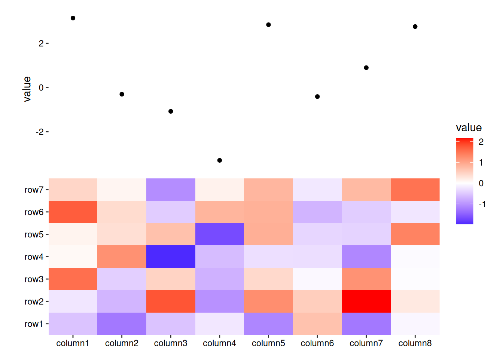
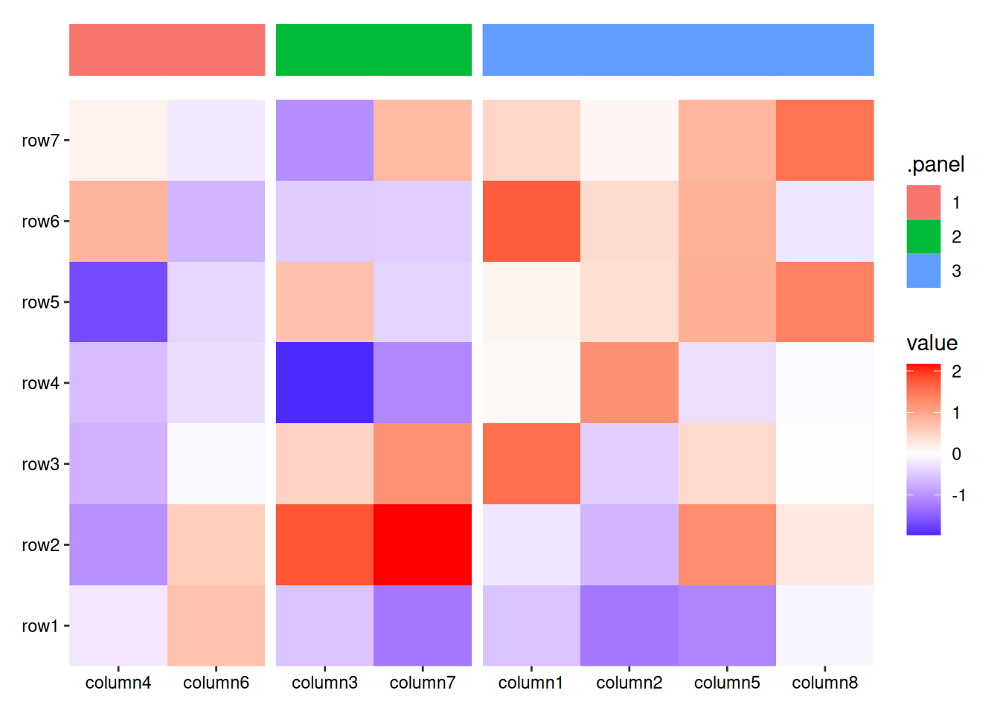
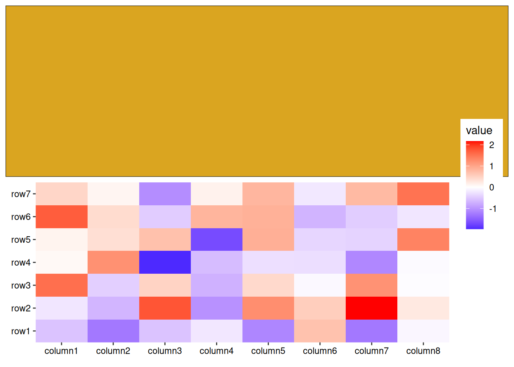
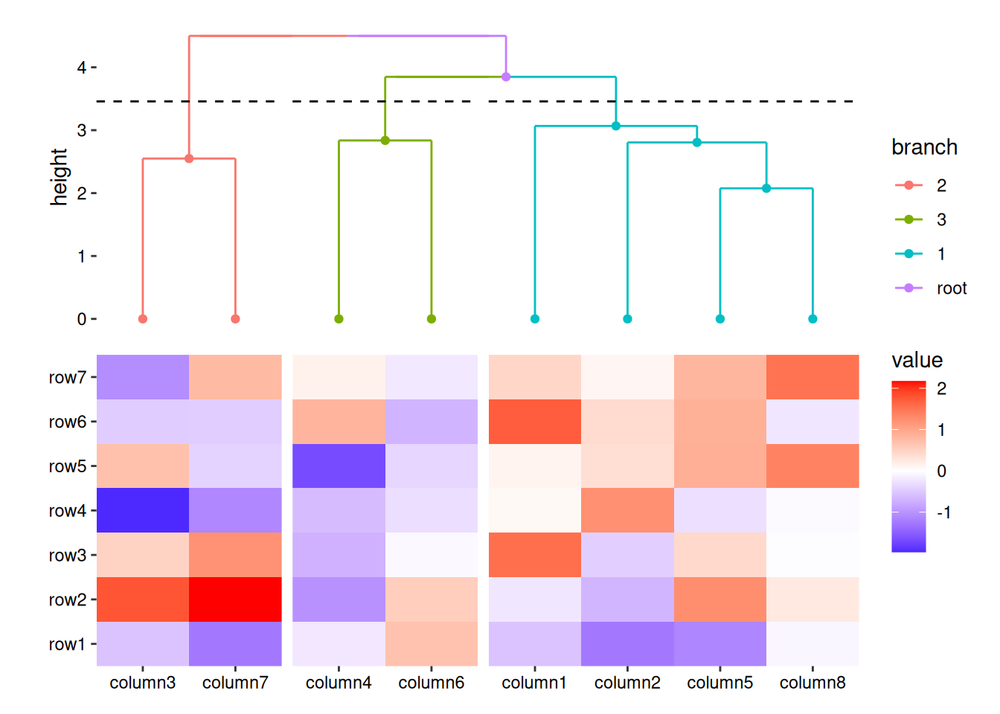
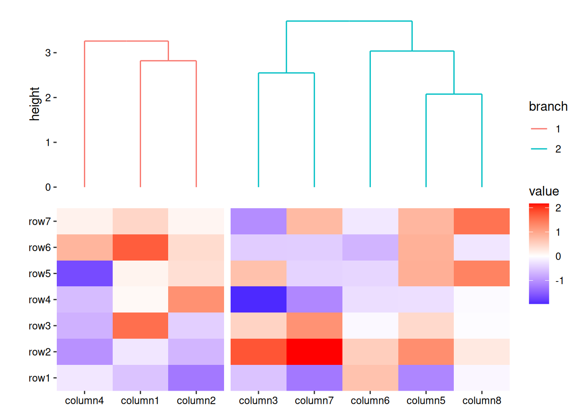
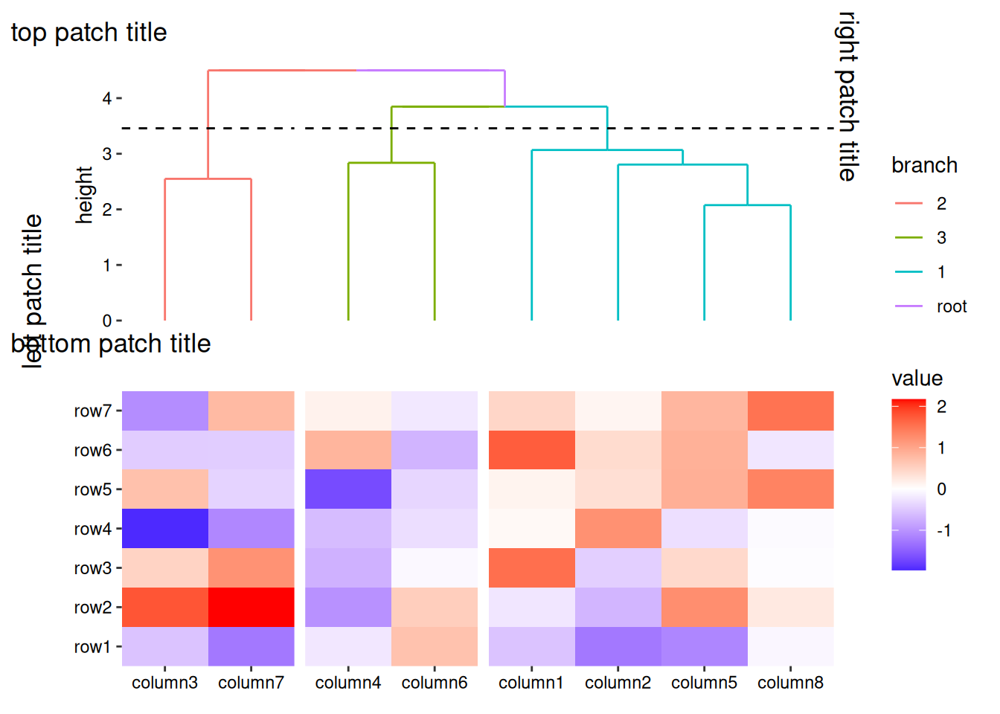

Code
library(ggalign)
#> Loading required package: ggplot2
set.seed(123)
small_mat <- matrix(rnorm(56), nrow = 7)
rownames(small_mat) <- paste0("row", seq_len(nrow(small_mat)))
colnames(small_mat) <- paste0("column", seq_len(ncol(small_mat)))There are following primary functions for adding plots:
ggalign(): Create a ggplot object and aligns the axes.ggfree(): Create a ggplot object without alignment.align_dendro(): Create a ggplot object of dendrogram tree, and align the observation. In addition, it can reorder and group the observations.All these functions will set the active plot when added to the layout.
Both ggmark() and align_dendro() can only for discrete variables.
library(ggalign)
#> Loading required package: ggplot2
set.seed(123)
small_mat <- matrix(rnorm(56), nrow = 7)
rownames(small_mat) <- paste0("row", seq_len(nrow(small_mat)))
colnames(small_mat) <- paste0("column", seq_len(ncol(small_mat)))ggalign()ggalign is the package name but it’s also a function in the package. ggalign() is similar to ggplot in that it initializes a ggplot data and mapping. ggalign() allowing you to provide data in various formats, including matrices, data frames, or simple vectors. By default, it will inherit from the layout. If a function, it will apply with the layout data.
The underlying plot data will be created using fortify_data_frame(), which, By default, calls ggplot2::fortify() to build the data frame. Additional methods have been added for atomic vector and matrix. For atomic vector, it will convert it to a data frame with following columns:
.names: the names for the vector (only applicable if names exist).value: the actual value of the vector.When data is a matrix, it will automatically be transformed into a long-form data frame, where each row represents a unique combination of matrix indices and their corresponding values. The resulting data frame will contain the following columns:
.row_names and .row_index: the row names (only applicable when names exist) and an integer representing the row index of the original matrix..column_names and .column_index: the column names (only applicable when names exist) and column index of the original matrix.value: the actual value.When alignning continuous variables, ggalign() will apply the limits set by the layout when drawing.
ggheatmap(small_mat) +
anno_top() +
ggalign(data = rowSums) +
geom_point(aes(y = value))
#> → heatmap built with `geom_tile()`
When aligning discrete variables, ggalign() always applies a default mapping for the axis of the data index in the layout. Specifically, This mapping is aes(y = .data$.y) for horizontal stack (including left and right annotation) and aes(x = .data$.x) for vertical stack (including top and bottom annotation).
The following columns will be added to the data frame to align discrete variables:
.panel: The panel for the aligned axis. Refers to the x-axis for vertical stack_layout() (including top and bottom annotations), and the y-axis for horizontal stack_layout() (including left and right annotations)..names ([vec_names()][vctrs::vec_names]) and .index ([vec_size()][vctrs::vec_size()]/[NROW()]): Character names (if available) and the integer index of the original data..x/.y and .discrete_x/.discrete_y: Integer indices for x/y coordinates, and a factor of the data labels (only applicable when names exist).It is recommended to use
.x/.y, or.discrete_x/.discrete_yas thex/ymapping.
When aligning discrete variables, almost all functions that add plots will generate data containing two key columns:
.panel: used to create ggplot2 facets..index: serves to match the data. It is useful for aligning observations or linking different data sources. You can use .index to merge data and create a new data frame, using method provided in Section 11.2.Additionally, if names exist, the .names column will also be created.
stack_continuous("v", mtcars, limits = continuous_limits(c(2, 4))) +
ggalign(mapping = aes(wt, mpg)) +
geom_point() +
ggalign(mapping = aes(wt, mpg)) +
geom_point() +
theme(axis.text.x = element_text())
When aligning discrete variables, ensure that the number of rows in the data matches the number of observations along the axis used for alignment:
my_df <- mtcars[seq_len(ncol(small_mat)), ]
ggheatmap(small_mat) +
anno_top() +
ggalign(data = my_df) +
geom_point(aes(y = cyl))
#> → heatmap built with `geom_tile()`If data = NULL, the data in the underlying ggplot object only contains following columns: .panel, .index, .names, .x/.y, .discrete_x/.discrete_y. You can use it to integrate additional elements, such as block annotation or customized panel title, into your layout.
ggheatmap(small_mat) +
anno_top(size = unit(1, "cm")) +
align_kmeans(centers = 3L) +
ggalign(data = NULL) +
geom_tile(aes(y = 1L, fill = .panel, color = .panel)) +
theme_no_axes("y")
#> → heatmap built with `geom_tile()`
The function theme_no_axes() can be used to quickly remove axis text and titles from the plot.
ggfree()The ggfree() function allows you to incorporate a ggplot object into your layout. Unlike ggalign(), which aligns every axis value precisely, ggfree() focuses on layout integration without enforcing strict axis alignment.
Internally, the function also uses fortify_data_frame() to transform the input into a data frame.
ggheatmap(small_mat) +
anno_top() +
ggfree(mtcars, aes(wt, mpg)) +
geom_point()
#> → heatmap built with `geom_tile()`
Since ggfree() may use axes that are not aligned with the primary plot’s axes, the axis titles will not be removed automatically. If you want to remove the axis titles, you must do so manually.
Alternatively, you can directly input the ggplot object.
ggheatmap(small_mat) +
anno_top() +
ggfree(ggplot(mtcars, aes(wt, mpg))) +
geom_point()
#> → heatmap built with `geom_tile()`
You can also add the ggplot object directly without using ggfree(). However, doing so will limit control over the plot (like plot area size, and active components):
ggheatmap(small_mat) +
anno_top() +
ggplot(mtcars, aes(wt, mpg)) +
geom_point()
#> → heatmap built with `geom_tile()`
When used in quad_layout()/ggheatmap(), if the data is inherited from the quad_layout() and the other direction aligns discrete variables, following columns will be added:
.extra_panel: Provides the panel information for the column (left or right annotation) or row (top or bottom annotation)..extra_index: The index information for the column (left or right annotation) or row (top or bottom annotation).This is useful if you want to create summary plot using another axis panel groups.
set.seed(1234)
ggheatmap(small_mat) +
theme(axis.text.x = element_text(angle = -60, hjust = 0)) +
# in the right annotation
anno_right() +
align_kmeans(2) +
# in the top annotation
anno_top(size = 0.5) +
ggfree() +
geom_boxplot(aes(.extra_panel, value, fill = .extra_panel)) +
scale_fill_brewer(palette = "Dark2", name = "row groups") +
theme_no_axes("x")
#> → heatmap built with `geom_tile()`This approach replicates the functionality of ComplexHeatmap::anno_summary(), but is versatile enough to be used with any heatmap, not just single-column or single-row heatmaps.
ggwrap() and inset()The ggwrap() function allows you to wrap objects that can be converted into a grob, turning them into a ggplot for plotting. Further you can still add ggplot elements like title, subtitle, tag, caption, and geoms using the same approach as with normal ggplots (using ggtitle(), labs(), geom_*()) as well as styling using theme(). This enables you to pass these wrapped objects into ggfree().
library(grid)
ggheatmap(small_mat) +
anno_top() +
# `ggwrap()` will create a `ggplot` object, we use `ggfree` to add it into the layout
ggfree(data = ggwrap(rectGrob(gp = gpar(fill = "goldenrod")), align = "full"))
#> → heatmap built with `geom_tile()`
You can also integrate base plots, pheatmap, ComplexHeatmap, e.g.
Additionally, you can add any graphics as a inset to a ggplot using the inset() function. Like ggwrap(), inset() can accept any object that can be converted to a grob.
ggheatmap(small_mat) +
anno_top() +
ggfree(data = ggwrap(rectGrob(gp = gpar(fill = "goldenrod")), align = "full")) +
# we can then add any inset grobs (the same as ggwrap, it can take any objects
# which can be converted to a `grob`)
inset(rectGrob(gp = gpar(fill = "steelblue")), align = "panel") +
inset(textGrob("Here are some text", gp = gpar(color = "black")),
align = "panel"
)
#> → heatmap built with `geom_tile()`
align_dendro()align_dendro() is an extension of align_hclust() that adds a dendrogram to the layout. All functions of align_hclust() introduced in Section 4.4 can be used with align_dendro(). Here, we focus on the plot-related function.
align_dendro() will initialize a ggplot object, the data underlying the ggplot object contains the dendrogram node data with dendrogram edge data attached in a special attribute.
dendrogram node and edge contains following columns:
.panel: Tree branch groups, used to create ggplot2 facet..names and .index: a character names (only applicable when names exists) and an integer index of the original data.label: node label textx and y: x-axis and y-axis coordinates for current node or the start node of the current edge.xend and yend: the x-axis and y-axis coordinates of the terminal node for current edge.branch: which branch current node or edge is. You can use this column to color different groups.leaf: A logical value indicates whether current node is a leaf.By default, plot_dendrogram is set to TRUE, meaning a geom_segment() layer will be added using the dendrogram edge data when drawing. Note that this layer is always added to the first.
ggheatmap(small_mat) +
anno_top() +
align_dendro()
#> → heatmap built with `geom_tile()`
You can choose between two dendrogram types: "rectangle" (default) and "triangle". However, if there are any groups in the stack, "rectangle" will be used.
ggheatmap(small_mat) +
anno_top() +
align_dendro(type = "triangle")
#> → heatmap built with `geom_tile()`
You can also manually add the dendrogram tree using the edge data by setting plot_dendrogram = FALSE. In this case, you can access the dendrogram edge data with ggalign_attr(). The edge data is stored in the edge field of ggalign_attr():
ggheatmap(small_mat) +
anno_top() +
align_dendro(plot_dendrogram = FALSE) +
geom_segment(
aes(x = .data$x, y = .data$y, xend = .data$xend, yend = .data$yend),
data = function(x) ggalign_attr(x, "edge")
)
#> → heatmap built with `geom_tile()`
When there are multiple groups, a branch column will be available. This can be used to color the nodes or edges based on the group source.
ggheatmap(small_mat) +
anno_top() +
align_dendro(aes(color = branch), k = 3) +
geom_point(aes(color = branch))
#> → heatmap built with `geom_tile()`
align_dendro() will draw dendrogram tree in each group when previous group exists.
set.seed(1234)
ggheatmap(small_mat) +
anno_top() +
align_kmeans(2) +
align_dendro(aes(color = branch))
#> → heatmap built with `geom_tile()`
You can merge the sub-tree by settting merge_dendrogram = TRUE.
ggheatmap(small_mat) +
anno_top() +
align_kmeans(2) +
align_dendro(aes(color = branch), merge_dendrogram = TRUE)
#> → heatmap built with `geom_tile()`
ggplot2 only allow add titles in the top or add caption in the bottom. we extends this capability, allowing you to place titles around any border of the plot using the patch_titles() function.
ggheatmap(small_mat) +
anno_top() +
align_dendro(aes(color = branch), k = 3) +
patch_titles(
top = "top patch title",
left = "left patch title",
bottom = "bottom patch title",
right = "right patch title"
)
#> → heatmap built with `geom_tile()`
The appearance and alignment of these patch titles can be customized using ggplot2::theme():
plot.patch_title/plot.patch_title.*: Controls the text appearance of patch titles. By default, plot.patch_title inherit from plot.title, and settings for each border will inherit from plot.patch_title, with the exception of the angle property, which is not inherited.plot.patch_title.position/plot.patch_title.position.*: Determines the alignment of the patch titles. By default, plot.patch_title.position inherit from plot.title.position, and settings for each border will inherit from plot.patch_title. The value "panel" aligns the patch titles with the plot panels. Setting this to "plot" aligns the patch title with the entire plot (excluding margins and plot tags).ggheatmap(small_mat) +
anno_top() +
align_dendro(aes(color = branch), k = 3) +
patch_titles(
top = "top patch title",
left = "left patch title",
bottom = "bottom patch title",
right = "right patch title"
) +
theme(
plot.patch_title.position = "plot",
plot.patch_title = element_text(hjust = 0)
)
#> → heatmap built with `geom_tile()`
Now that you know the general approach to adding a plot, it would be useful to explore how to add annotation plots for specific observations. Let’s move on to the next chapter.